RF & Microwave Systems
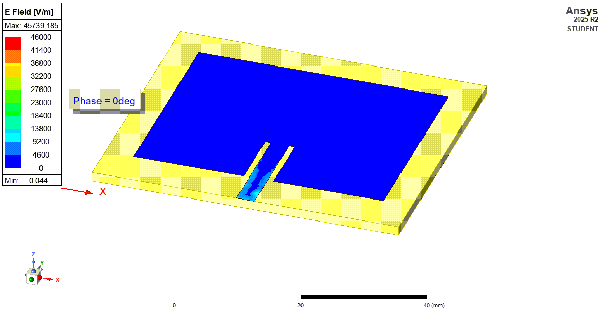
01
2.4 GHz · Wi-Fi antenna · Full-wave EM
Single-element microstrip patch antenna for IEEE 802.11b/g/n, designed analytically using the transmission-line model and validated with full-wave EM simulation in Ansys HFSS. Inset feed for direct 50 Ω matching. Parametric optimisation of patch length and feed position.
f₀
2.400 GHz
S11
−24.75 dB
BW (−10 dB)
~38 MHz
Gain
~7 dBi
→ Details
The 0.52 mm difference between analytical and simulated patch length captures the effect of the inset feed slot on the effective resonant length — a parasitic effect invisible to the transmission-line model but fully resolved by the HFSS full-wave solver.
Top view — HFSS model
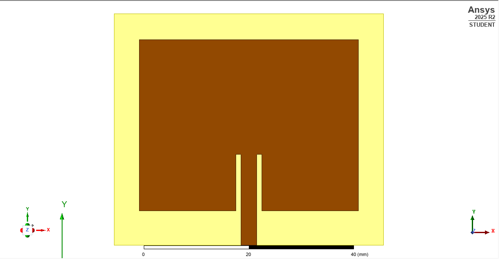
S11 — return loss
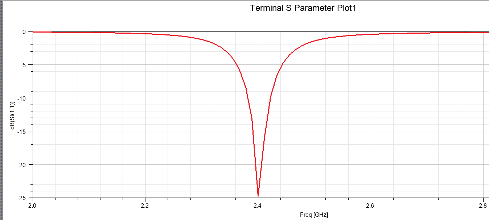
Isometric view
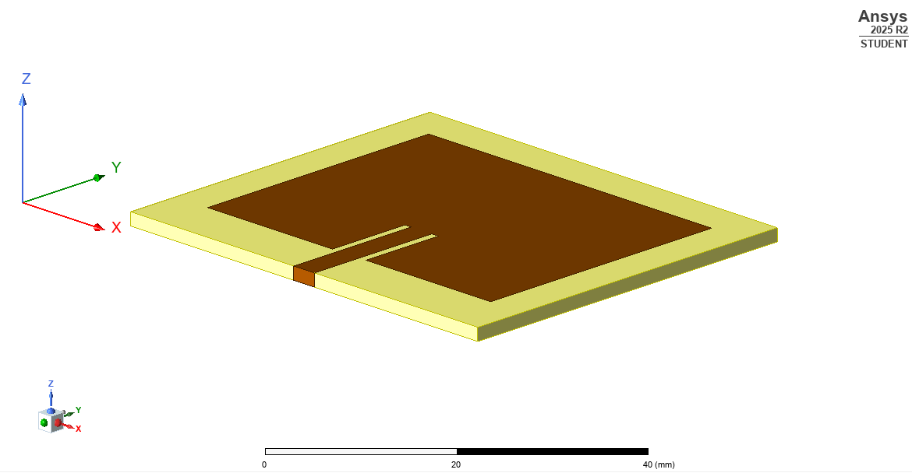
E-field distribution — TM₁₀ mode
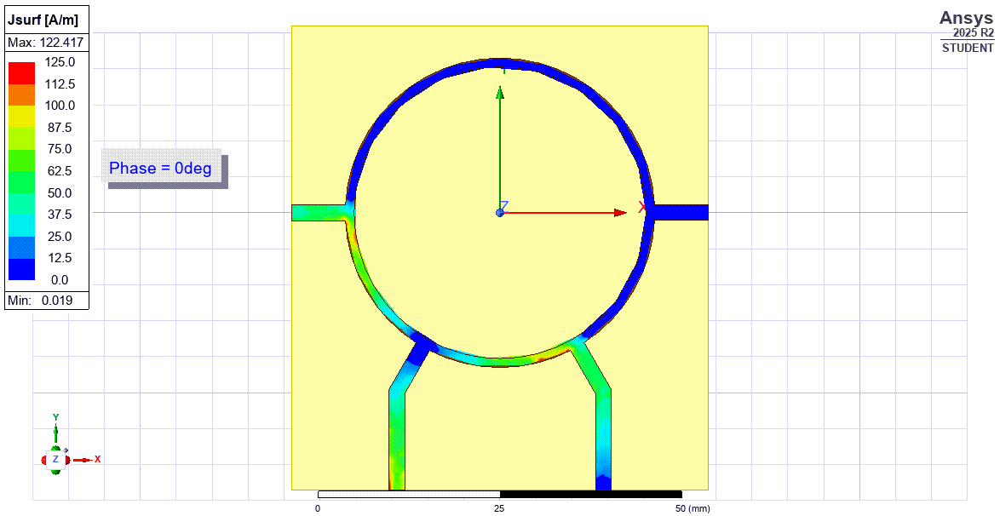
HFSS simulation · 2.4 GHz02
2.4 GHz · Hybrid coupler · Full-wave EM
Four-port 180° hybrid coupler enabling sum (Σ) and difference (Δ) signal operations. Full-wave electromagnetic simulation in Ansys HFSS on Taconic TLX-8 substrate, capturing coupling effects, discontinuities and radiation losses. Core building block in radar front-ends and beamforming networks.
f₀
2.4 GHz
S11 min
−33.3 dB
S21
−3.0 dB
Substrate
TLX-8
→ Details
Rat-race couplers are core building blocks in radar front-ends, satellite payloads and beamforming networks. The Σ/Δ operation is fundamental in monopulse radar and balanced mixers.
Top view — HFSS model
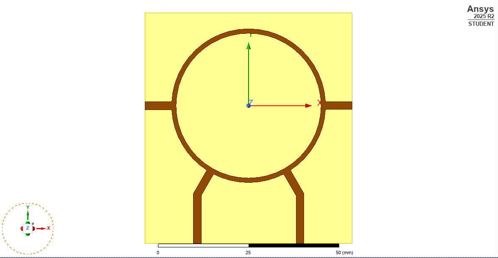
S-parameters (S11, S21, S31, S41)
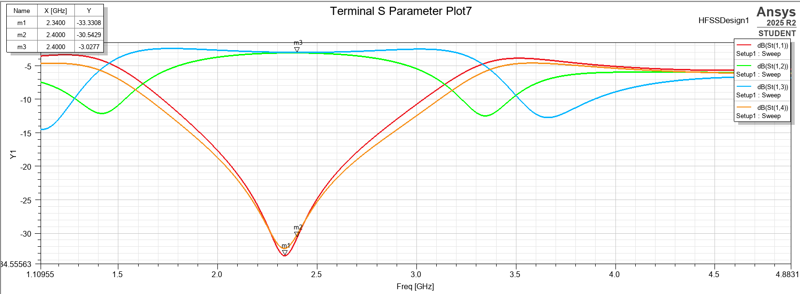
Isometric view
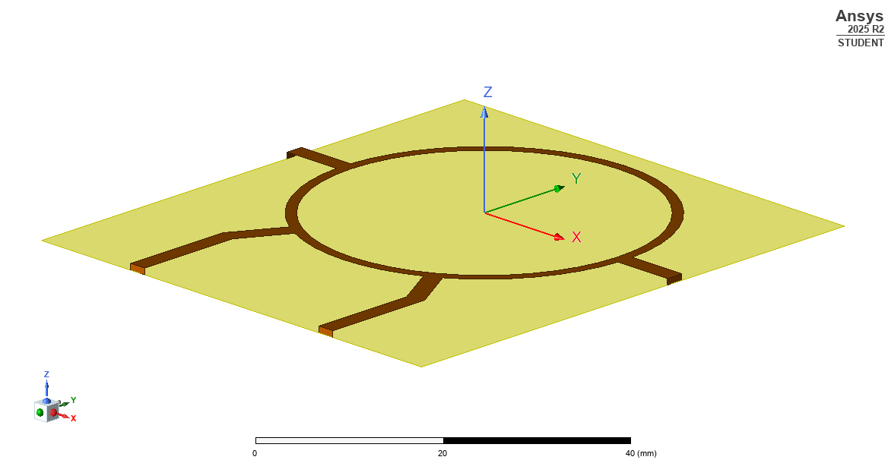
Surface current Jsurf — signal propagation
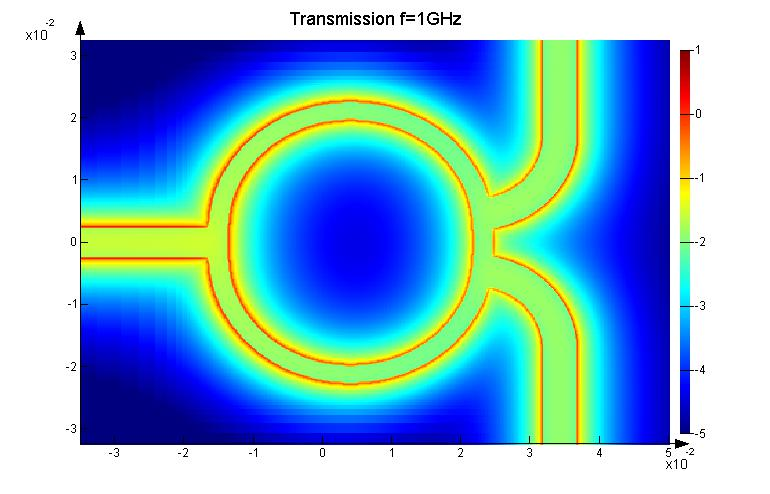
RFSim99 schematic03
2.4 GHz · Passive splitter · Circuit-level
Equal-split two-way power divider designed using a hybrid modelling approach — distributed quarter-wavelength transmission lines combined with lumped isolation elements. Both distributed and lumped implementations simulated and compared in RFSim99.
f₀
2.404 GHz
S11
−49.3 dB
S21 = S31
−3.0 dB
Tool
RFSim99
→ Details
Quarter-wavelength transmission lines (Z₀ = 70.71 Ω) perform the required impedance transformation. A 100 Ω isolation resistor suppresses mutual coupling between output ports, enabling high port-to-port isolation at resonance.
Comparing distributed and lumped implementations reveals the trade-off between circuit compactness and bandwidth. The distributed version shows sharper resonance; the lumped model is more compact but frequency-sensitive — illustrating why full-wave EM validation matters at microwave frequencies.
Circuit schematic — RFSim99
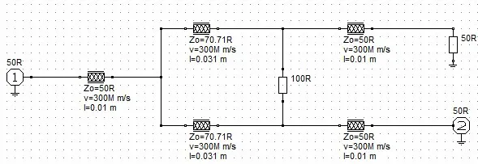
S11 & S21 magnitude — distributed model
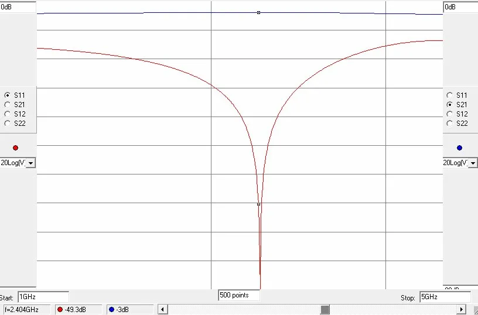
S21 phase response
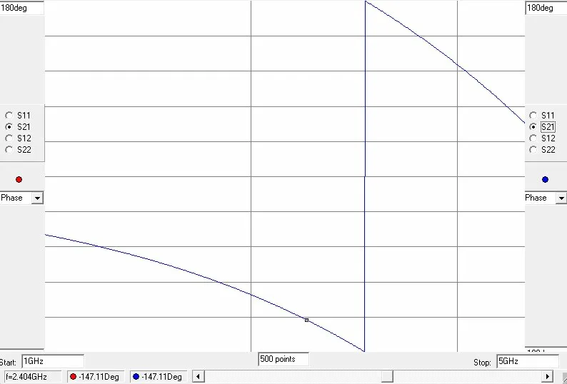
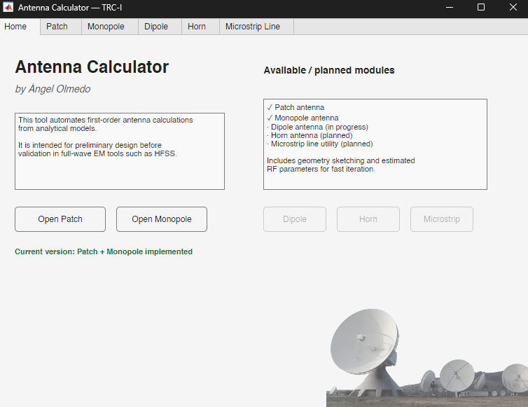
MATLAB · App Designer04
RF design tool · MATLAB · Analytical modelling
Interactive MATLAB application for analytical pre-design of microstrip antennas before full-wave EM simulation in HFSS. Implements the Hammerstad transmission-line model for patch antennas and standard λ/4 formulas for monopoles — computing physical dimensions, effective permittivity, feed position, estimated bandwidth and directivity from frequency and substrate parameters. Includes real-time dynamic schematic with dimension annotations and substrate validity checks (0.003λ ≤ h ≤ 0.05λ).
v1.0 antennas
Patch · Monopole
Inputs
f₀, εᵣ, h
Outputs
W, L, BW, D, xf
Status
In development
→ Details
Bridges analytical RF design and full-wave EM simulation — computing starting dimensions in seconds before opening HFSS. Reduces design iteration time and builds intuition about parameter sensitivity: how εᵣ affects patch size, how h trades off bandwidth against surface wave losses, and how feed position controls input impedance.
Patch tab — design parameters + schematic
Patch design example — 2.4 GHz, RO4003C
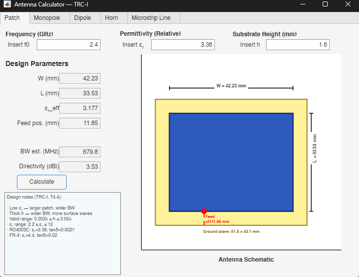
Monopole tab — λ/4 design + image theory
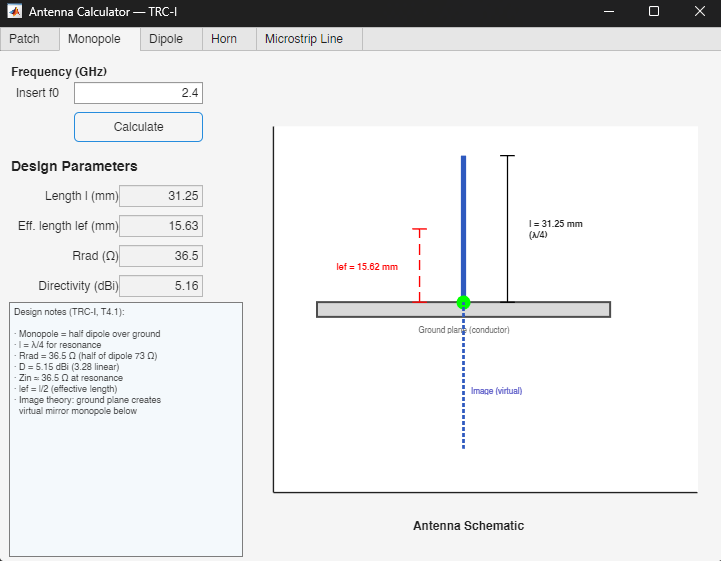